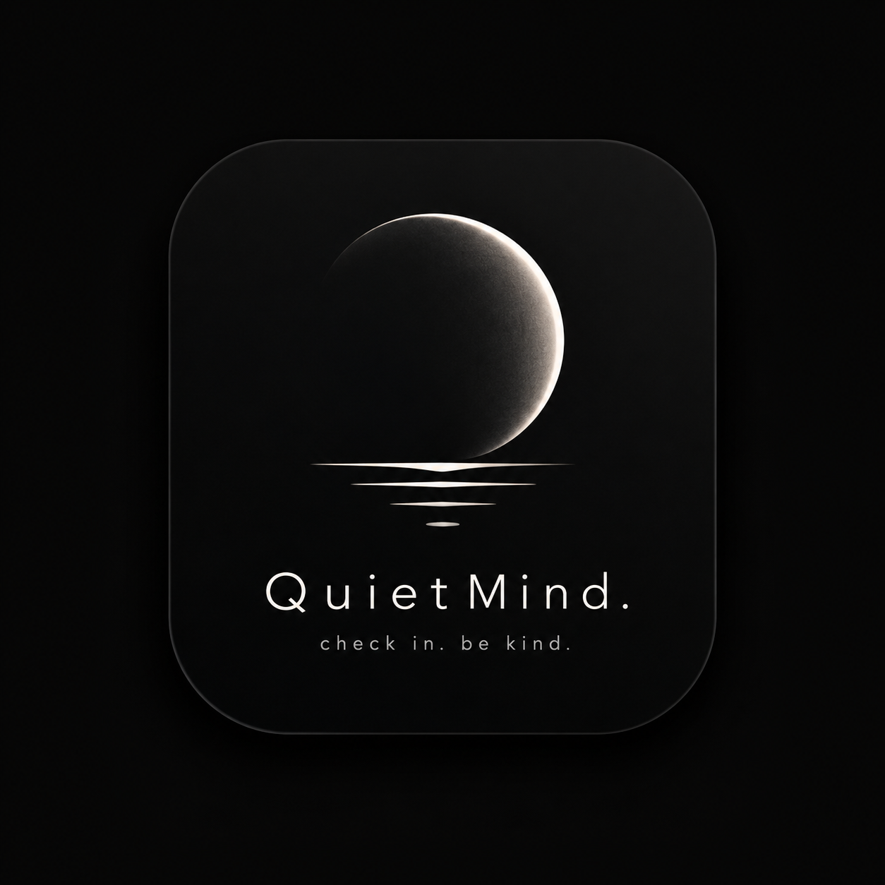

A gentler way to check in.
Set a PIN to keep your entries private
Light, dark, or follow your system
No PIN set
Generate a PDF of any range of your entries. Useful for sharing with a therapist, or just keeping a copy.
You have 0 days of check-ins available.
QuietMind · A working concept, not a real product.
Your data stays on your device.
A quiet daily check-in that helps you see patterns over time — without the guilt, the gamification, or the pressure to be consistent.
Most apps treat your mood like a metric to maximize. We treat it like a moment to notice.
Skip a day, skip a week. Nothing breaks. The app doesn't track your "consistency" — because rest isn't failure.
Just one sentence on what shaped your day. Light enough to keep, meaningful enough to remember.
Reminders are optional, dismissible, and never guilt-driven. Silence is a feature, not a bug.
See how your weeks actually feel. Notice trends without turning them into KPIs.
Open the app. Pick how today feels. Write one sentence. Close it. That's it.
We use color and shape, not "rate your mood from 1 to 5." It feels less like filling out a form and more like noticing how you actually are.
Try it now — pick a mood and write something. Your entry will appear in the graph below.
A simple, glanceable view of how the last days and weeks have actually felt. Tap any day to see the one-liner you wrote.
Your graph will appear here once you save your first check-in.
Other apps punish you for missing a day. We don't even mention it. Reminders are off by default, and when they're on, they're easy to ignore.
Your check-ins live on your device, in your browser's local storage. Not on our servers, not in some training dataset, not in a cloud. If you clear your browser data, your entries go with it.
Optional PIN lock keeps entries private if someone else picks up your phone.
This is a working prototype — scroll up, save a check-in, and watch it appear in your graph. Use it as often as feels right.
No login. No cloud. Just you and your browser.